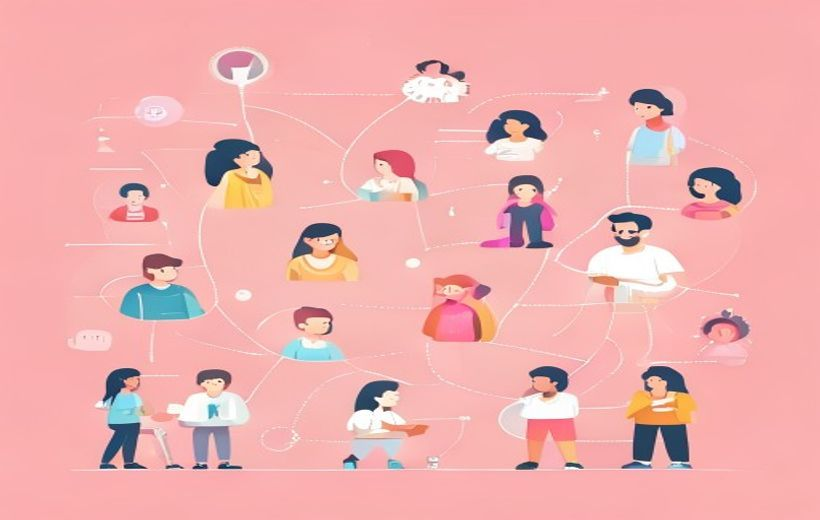

El marco que clasifica todo lo que hace una marca en digital en tres tipos de medios: Paid, Owned y Earned. Es el concepto más importante del tema y probablemente el que más cae en el examen final.
POEM: los tres tipos de medios del marketing digital.
Todo lo que una marca hace en internet pertenece a una de tres categorías: lo que paga (Paid), lo que controla (Owned) o lo que se gana gracias a otros (Earned) — y la magia está en combinarlos bien.
🧠 Los conceptos
Despliega cada tarjeta, léela con calma y márcala como entendida. La barra de arriba irá subiendo.
El modelo POEM (Paid · Owned · Earned Media) es un mapa para clasificar cualquier acción de comunicación digital de una marca según quién controla el canal. Lo creó Sean Corcoran de Forrester Research en 2009 porque la publicidad ya no era solo TV y periódicos: había miles de canales digitales y hacía falta un sistema para ordenarlos.
La idea clave: todo punto de contacto que una marca tiene con su público cae en uno de estos tres cajones. Ningún canal queda fuera.
| Letra | Tipo | ¿Quién manda? | Ejemplo rápido |
|---|---|---|---|
| P | Paid (pagado) | Tú, pagando | Anuncio en Instagram |
| O | Owned (propio) | Tú, sin pagar | Tu web, tu Instagram |
| E | Earned (ganado) | Terceros, libremente | Una reseña de cliente |
Modelo POEM (Paid, Owned, Earned Media) — «fue sistematizado por Sean Corcoran de Forrester Research en 2009 como respuesta a la fragmentación de los medios digitales». La idea: «todo punto de contacto con el consumidor pertenece (o debería pertenecer) a una de estas tres categorías, cada una con un rol concreto en el viaje del usuario».
Contexto de surgimiento — el PDF cita tres transformaciones clave: «desplazamiento progresivo de inversión hacia entornos digitales», «consolidación de activos digitales propios de las marcas» y «emergencia del usuario como agente activo en producción y difusión de contenidos».
Owned Media son todos los canales digitales que la marca posee y controla totalmente. Tú decides qué publicas, cuándo y cómo. No dependes de nadie.
¿Cuáles son? Memoriza la lista:
| Detalle | |
|---|---|
| ✅ Ventaja principal | Control total: publicas lo que quieres, cuando quieres, sin pagar por cada impresión. Los datos del usuario son tuyos (1st party data). |
| ⚠️ Limitación | Alcance limitado: solo llega a quien ya te conoce. Si nadie te busca, tu web está vacía. |
| KPI típico | Visitas, tiempo en página, suscriptores email, tasa de conversión. |
Owned Media (definición oficial) — «todos los canales digitales controlados por la marca, entre los que se incluyen el sitio web corporativo, el blog, las newsletters, las apps y, de forma explícita, los perfiles oficiales de la marca en redes sociales. Aunque estas plataformas pertenecen a terceros, la marca gestiona el contenido, la estrategia y la relación con la audiencia, por lo que deben considerarse activos propios dentro del modelo POEM/PESO» (Solé Moro & Campo Fernández, 2025).
Objetivo oficial — «generar comunidad, fans, posicionamiento, transmisión de propuesta de valor, transformar el interés en leads y acciones medibles».
Métricas del PDF — DAU (Daily Active Users, usuarios activos diarios), MAU (Monthly Active Users), CTR (Click Through Rate, proporción de usuarios que hicieron clic en un enlace) y NPS (Net Promoter Score, para medir la lealtad: «¿Recomendarías a ESIC a un amigo?» — solo cuentan el 9 y el 10).
Earned Media es la exposición que consigues gracias a terceros que hablan de ti voluntariamente, sin que tú les hayas pagado. Lo "ganas" porque la gente te menciona, te recomienda o crea contenido sobre ti.
¿Cuáles son? Memoriza la lista:
| Detalle | |
|---|---|
| ✅ Ventaja principal | Alta credibilidad: lo dicen otros, no tú. Tiene efecto «prueba social» (social proof). Bajo coste directo y puede volverse viral. |
| ⚠️ Limitación | No lo puedes controlar: puede ser positivo o negativo. Difícil de escalar. También puede ser una reseña de una estrella. |
| KPI típico | Menciones, Share of Voice, sentimiento, alcance orgánico, backlinks. |
Earned Media (definición oficial) — «los medios ganados condensan la validación (o prueba) social de un mensaje: menciones espontáneas, reseñas, notas de prensa, UGC (User Generated Content) contenidos generados por usuarios y conversaciones en foros. Su valor radica en la credibilidad distribuida que emana de actores no controlados». Objetivo: «más alcance sin coste directo y social proof o prueba social (autoridad y credibilidad)».
WOM / eWOM — el «Word of Mouth (WOM) y su extensión digital eWOM constituyen elementos centrales, aportando credibilidad al no percibirse como comunicación controlada por la marca». Según Jonah Berger (Contagious), la viralización «no es aleatoria, sino que responde a principios identificables»: su modelo STEPPS.
Share of Voice (SOV) — «porcentaje de visibilidad o cuota de mercado que tiene una marca en comparación con sus competidores dentro de un canal o mercado específico». Backlinks («enlaces entrantes») — links desde un sitio externo hacia el tuyo; en SEO son «votos de confianza» que mejoran el posicionamiento en los resultados de búsqueda (SERP).
Paid Media es cuando la marca paga directamente por conseguir exposición. Controlas quién te ve, cuándo y dónde, pero tienes que poner dinero cada vez.
¿Cuáles son? Memoriza la lista:
| Detalle | |
|---|---|
| ✅ Ventaja principal | Escalable, rápido y muy targetizable (llegas exactamente al público que quieres, donde quieres y cuando quieres). Resultados inmediatos y medibles. |
| ⚠️ Limitación | Coste recurrente: si dejas de pagar, desapareces. Menor credibilidad que Earned. Dependes de las plataformas y sus algoritmos. |
| KPI típico | CPM, CPC, CTR, CPA, ROAS (retorno de la inversión publicitaria). |
Paid Media (definición oficial) — «los medios pagados operan como palancas de escala y precisión. Permiten acelerar el descubrimiento, ajustar la frecuencia y modular mensajes por segmento, momento y geografía». Acciones digitales del PDF: anuncios de display o vídeo, Social Ads, Search Ads, «patrocinios e integración de producto en streaming», «colaboraciones de pago con influencers» y Ad Boosts (Spark Ads de TikTok, IG Partnership Ads).
Señal algorítmica — «conjunto de indicadores de interacción temprana que una plataforma digital registra sobre una pieza de contenido (visualizaciones, duración de visionado, clics, comentarios, compartidos…) y que utiliza como variable de entrada en su algoritmo de distribución para decidir si escalona, frena o clasifica el alcance». El Paid la genera «con impacto Earned».
Métricas del PDF — CVR (Conversion Rate, tasa de conversión), CPA (Cost Per Acquisition, coste por adquisición), VTR (View-Through Rate, tasa de visualización), ROAS (Return on Ad Spend, retorno de la inversión publicitaria) y Share of Shelf (visibilidad de la marca en la «estantería digital» de un marketplace, propio del Retail media).
En el examen te darán una acción concreta y te preguntarán: ¿es Paid, Owned o Earned? Usa este truco de tres preguntas:
Tabla de identificación rápida con ejemplos cotidianos:
| Acción concreta | ¿Por qué? | Tipo |
|---|---|---|
| Anuncio de Instagram patrocinado | Pagas a Meta por mostrar el anuncio | Paid |
| Un influencer cobra 500 € por mencionar tu marca | Hay contraprestación económica | Paid |
| Impulsas (boost) una publicación en Facebook | Pagas para que llegue a más gente | Paid |
| El blog de tu empresa | Tú publicas, tú controlas, sin pagar por la exposición | Owned |
| La cuenta de Instagram de la marca | La cuenta es tuya y publicas lo que quieres | Owned |
| Tu app móvil oficial | La posees y controlas totalmente | Owned |
| Un cliente te pone 5 estrellas en Google | Un tercero lo hace voluntariamente, sin pago | Earned |
| Un periódico escribe sobre ti sin que hayas pagado | Cobertura editorial voluntaria | Earned |
| Un usuario cuelga un vídeo unboxing de tu producto | UGC: contenido generado por el usuario, sin pago | Earned |
| Tu hashtag se vuelve viral sin inversión | La gente lo comparte sola | Earned |
El caso del influencer (truco especial):
Influencers o talentos — el PDF dice que «no encajan de forma rígida en una única categoría del modelo POEM/PESO»: son Paid Media «cuando existe una contraprestación económica directa por la creación o difusión de contenidos»; Owned Media «cuando los contenidos generados se integran o reutilizan en los canales propios de la marca»; y Earned Media «cuando la acción genera conversación, cobertura o amplificación orgánica más allá del acuerdo inicial».
«Influencer Marketing: Paid, sí, pero como palanca de Earned» — así titula el PDF esta idea: el pago al influencer es Paid, pero su función estratégica es activar el Earned.
Los tres medios no funcionan solos: se retroalimentan. El POEM funciona mejor cuando los tres trabajan juntos como un circuito. Esta sinergia es lo que marca la diferencia entre una estrategia digital básica y una buena.
Paid, Owned y Earned media, cada uno con su papel.
Ejemplo concreto de sinergia:
| Paid | Owned | Earned | |
|---|---|---|---|
| Control | Alto | Total | Bajo |
| Coste | Alto (€ por exposición) | Bajo (mantenimiento) | Mínimo directo |
| Credibilidad | Baja | Media | Alta |
| Escalabilidad | Alta | Media | Impredecible |
| Velocidad | Rápida | Media | Lenta (acumulativa) |
Detonantes de la conversación social — «el Earned Media no debe concebirse como un resultado fortuito, sino como el resultado indirecto de una planificación estratégica adecuada, donde los medios propios y pagados actúan como detonantes de la conversación social».
Interdependencia entre canales — «la gestión del WOM y del eWOM se integra así como un componente clave dentro del modelo POEM, reforzando la interdependencia entre canales y el carácter relacional de la comunicación de marca».
Orquestación y tránsito cualificado — la potencia del Paid «radica en la orquestación con activos propios y rutas de earned, donde las impresiones dejan de ser un fin para convertirse en tránsito cualificado». Aportes del Paid según el PDF: «tráfico que alimenta contenidos owned» y «generación de señal algorítmica con impacto Earned». Y el Earned aporta «impulso SEO: backlinks de calidad elevan la autoridad de los activos Owned» y «feedback en tiempo real que puede retroalimentar Paid y Owned».
Comunidad virtual es un grupo de personas cohesionado en torno a un interés común que interactúan regularmente en plataformas digitales. No son solo seguidores pasivos: participan, debaten y co-crean.

Comunidades virtuales: personas conectadas alrededor de una marca.
Cuatro tipos de comunidades:
| Tipo | ¿En torno a qué? | Plataformas típicas | Ejemplo |
|---|---|---|---|
| De interés | Hobbies, aficiones, fans | Reddit, Discord, foros | Comunidad de fans de Nintendo en Reddit |
| De marca | La propia marca como aglutinador | Grupos, apps propias | Harley Owners Group, Sephora Beauty Insider |
| De práctica | Conocimiento profesional compartido | LinkedIn Groups, Stack Overflow | Diseñadores UX en LinkedIn |
| Geográficas | Territorio o barrio | NextDoor, grupos Facebook | Vecinos del barrio de Salamanca |
¿Qué aportan a la marca?
Ecosistema digital — «el ecosistema digital contemporáneo articula redes sociales, plataformas y comunidades virtuales como capas interdependientes que median las interacciones entre personas, organizaciones e instituciones». Comprender «su identificación y definición operativa permite diseñar estrategias que optimicen el alcance y garanticen la responsabilidad informativa».
Foros y comunidades (Reddit, Discord) — en la tabla oficial del PDF su objetivo principal es «co-creación y soporte», sus métricas clave son «mensajes útiles, tiempo en comunidad», su riesgo de desinformación es «polarización y moderación insuficiente» y su activación de ejemplo es un «programa de embajadores con guías prácticas».
En la última década ha surgido el modelo PESO, que añade una cuarta categoría: Shared Media (medios compartidos). Lo propuso Gini Dietrich en su libro Spin Sucks (2014).
¿Qué es Shared Media? La difusión entre pares: cuando una persona comparte, comenta o remezcla el contenido de otra en redes sociales. No pertenece a la marca ni a un medio tradicional: circula bajo lógicas participativas.
| Modelo | Categorías | Cuándo usarlo |
|---|---|---|
| POEM | Paid + Owned + Earned | Planes básicos, estudios, exámenes FP |
| PESO | Paid + Earned + Shared + Owned | Cuando gestionas grandes comunidades o necesitas aislar el factor «compartir» |
Shared Media (compartidos) — «se refiere a la difusión entre pares: cuando una persona comparte, comenta o remezcla el contenido de otra». Dietrich (Spin Sucks, 2014) lo introduce «para diferenciar explícitamente los espacios donde el contenido no pertenece a la marca ni a los medios tradicionales, sino que circula, se comparte y se co-crea en redes sociales y comunidades digitales, bajo lógicas participativas».
¿Cuándo usar uno u otro? — formulación literal del PDF: «POEM es más compacto y suficiente para planes básicos; PESO resulta útil cuando gestionamos grandes comunidades y necesitamos aislar claramente el factor "compartir". En la práctica, las herramientas de medición ya reportan métricas de Shared (RT, repost, duet) por separado».
Cada plataforma digital tiene un objetivo, unas métricas clave y un tipo de activación recomendado. No es lo mismo Instagram que LinkedIn aunque las dos son «redes sociales».
| Plataforma | Objetivo | Métricas clave | Activación típica |
|---|---|---|---|
| Facebook (generalista) | Alcance e interacción sostenida | Alcance, interacciones, retención de vídeo | Serie de historias con Q&A semanal |
| TikTok (vídeo corto) | Descubrimiento y notoriedad | Reproducciones, tasa de finalización | Reto con hashtag + tutorial de 30 s |
| LinkedIn (profesional) | Reputación y autoridad | Clics a web, comentarios cualificados | Seminario en vivo con panel experto |
| Reddit / Discord (foros) | Co-creación y soporte | Mensajes útiles, tiempo en comunidad | Programa de embajadores con guías |
| WhatsApp / Telegram (mensajería) | Conversión y fidelización | CTR de catálogos, respuestas | Catálogo semanal con FAQ |
Selección de activaciones idóneas — «requiere alinear plataforma, formato y propósito con objetivos medibles y recursos disponibles». La tabla oficial del PDF incluye además una columna de riesgos de desinformación por plataforma (p. ej. «viralización de datos no verificados» en redes generalistas, «efecto tendencia sobre afirmaciones dudosas» en vídeo corto).
Flujos de activación y amplificación — así titula el PDF el glosario Seed–Hub–Ripple. Seed (semilla de pago): «acciones iniciales de pago para encender la difusión» (anuncios, Sparks, regalar producto para UGC, inversión en influencers), donde puede aplicarse la técnica del «First Pilot» o inversión previa termómetro. Hub (centro de contenidos): el «owned hub» es «el espacio propio donde vive y se organiza la experiencia: web, app, landing o content hub». Ripple (efecto onda): «la ola de menciones, UGC, backlinks y coberturas que se generan si la semilla y el hub funcionan» — el «earned media ripple effect».
📖 Vocabulario del examen
Cómo lo digo fácil → cómo lo llama el PDF (y como saldrá en el examen).
| En fácil | Término oficial del PDF |
|---|---|
| Lo que pagas (anuncios) | Paid Media — «palancas de escala y precisión» |
| Lo que es tuyo (web, blog, app, perfiles) | Owned Media — «canales digitales controlados por la marca», considerados «activos propios» |
| Lo que te ganas gratis (reseñas, menciones) | Earned Media — «validación (o prueba) social», «credibilidad distribuida» |
| Que otros hablen bien de ti y te dé credibilidad | Social proof o prueba social (autoridad y credibilidad) |
| Boca-oreja (de toda la vida y digital) | WOM / eWOM (Word of Mouth y su extensión digital) |
| Contenido que suben los propios usuarios | UGC (User Generated Content) — contenidos generados por usuarios |
| Compartir entre la gente (RT, repost, duet) | Shared Media — «difusión entre pares», modelo PESO (Dietrich, Spin Sucks) |
| Pagar a un influencer | Colaboraciones de pago con influencers — Paid si hay «contraprestación económica directa» |
| El empujón inicial pagado de una campaña | Seed (semilla de pago), con la técnica del «First Pilot» como termómetro previo |
| Tu casa digital adonde llevas el tráfico | Hub (centro de contenidos) — el «owned hub»: web, app, landing o content hub |
| La ola de menciones que se genera sola | Ripple (efecto onda) — «earned media ripple effect» |
| Likes y primeras interacciones que disparan el alcance | Señal algorítmica — indicadores de interacción temprana que el algoritmo usa para escalar o frenar el contenido |
🃏 Flashcards
Toca cada tarjeta para girarla. Tapa la definición con la mano y comprueba si te la sabes.
✅ Test rápido
6 preguntas tipo examen. Elige una opción y te corrige al momento con la explicación.
⭐ Preguntas del final de la presentación
La presentación del Tema 2 no incluye una diapositiva de autoevaluación formal, pero recoge preguntas prácticas implícitas a lo largo del tema. Las 3 de abajo son preguntas de práctica elaboradas con el mismo nivel y formato del examen final, basadas en el contenido real del PDF.
El modelo POEM (Paid, Owned, Earned Media) fue sistematizado por Sean Corcoran de Forrester Research en 2009. Clasifica toda acción de comunicación digital según quién controla el canal y si hay inversión publicitaria directa:
En resumen: Paid = pagas. Owned = lo controlas tú sin pagar. Earned = lo generan otros gratis.
Los tres medios del modelo POEM se retroalimentan y funcionan mejor juntos que por separado. El circuito ideal es:
Ejemplo de lanzamiento de una zapatilla deportiva:
Sin Paid, el lanzamiento sería lento. Sin Owned, no habría base donde convertir. Sin Earned, la marca no acumula reputación. Los tres juntos crean un círculo virtuoso.
Una comunidad virtual es un grupo de personas cohesionado en torno a un interés o propósito común que interactúan regularmente en plataformas digitales (redes sociales, foros, apps, etc.).
Cuatro tipos:
Beneficios para la marca:
En el modelo POEM, una comunidad activa genera Earned Media de forma constante y alimenta los activos Owned de la marca.